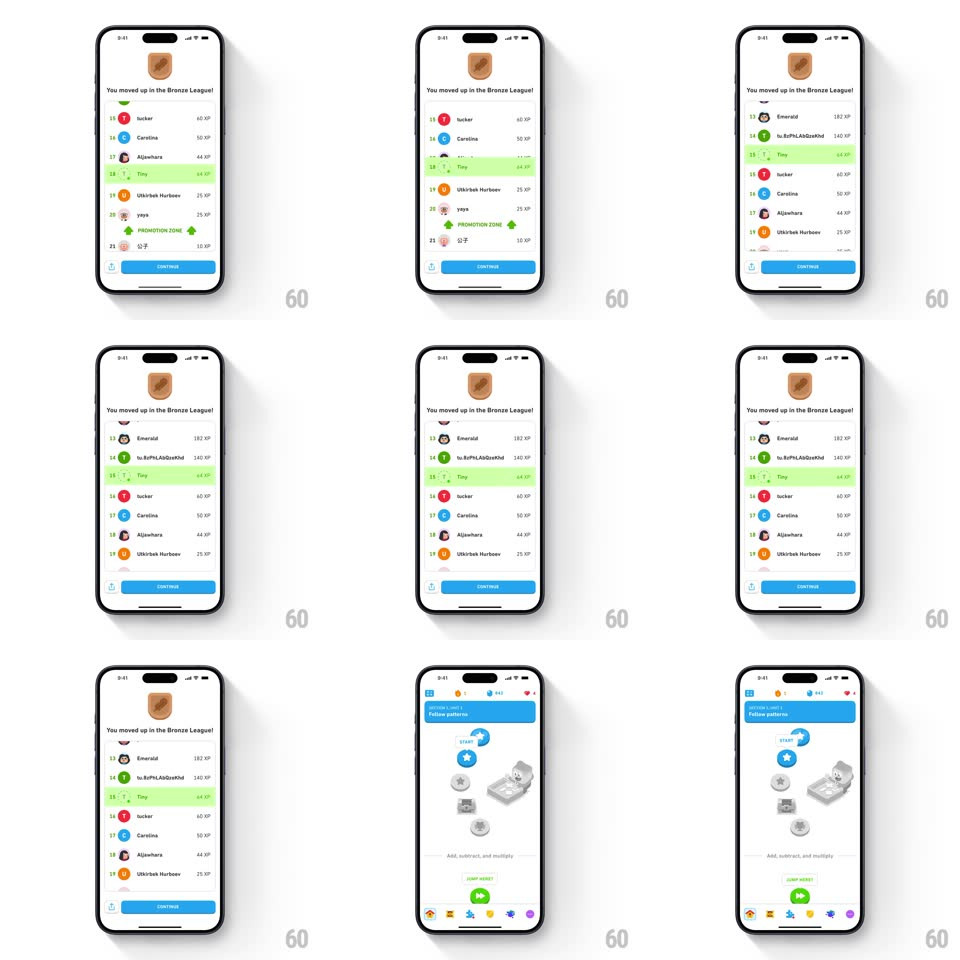

Media
Frame-by-frame

Rebuild this interaction 1:1: Duolingo's league promotion moment - the leaderboard list scrolls smoothly as your row ("You", green-highlighted) climbs past other learners' rows toward the promotion zone, your row pulsing, then the screen transitions back to the lesson path.

Rebuild this interaction 1:1: Duolingo's league promotion moment - the leaderboard list scrolls smoothly as your row ("You", green-highlighted) climbs past other learners' rows toward the promotion zone, your row pulsing, then the screen transitions back to the lesson path.
## Integration
Integration: stack-agnostic spec - springs given as stiffness/damping, timed motions as duration + curve; map every value to your framework and animation library of choice.
## Scene
"You moved up in the Bronze League!" screen: a leaderboard list (rank, avatar, name, XP), the user's row highlighted green, a green "PROMOTION ZONE" marker, and a blue Continue button. Ends on the lesson path view.
## Motion spec
Pattern: animated rank climb with row highlight.
- The list scrolls upward smoothly (~1.2s, ease-in-out) as ranks above recede; the user's row moves up past 2-3 competitors.
- The user's row pulses while climbing (highlight opacity 0.6 -> 1 -> 0.6, 800ms loop) and its rank number ticks down.
- Passing the promotion zone line triggers a small pop on the user's row (scale 1 -> 1.03 -> 1, 300ms).
- Continue: the leaderboard slides down and out (spring ~380/26) as the lesson path slides in from below (350ms).
## Calibration
- Other rows never move relative to the list - only the scroll and the user's highlight carry the story.
- The green highlight must survive the whole climb - the user can always find themselves.
## Reduced motion
List jumps to the final rank with a fade (200ms); highlight fades in once.
## Don't miss
- The XP values stay fixed - the story is position, not points changing.
- The promotion zone marker is a labeled band, not just a color change.